Okurková sezona je sice již za námi, ale i tak se na chvíli zase vrátím do naší výletnické rubriky, kde třeba najdete trochu inspirace pro svá poprázdninová putování, i když už se jedná o zážitky staršího data.
Expozice Ohnivý kůň a drak, Sklep pod Novou radnicí, Brno
Pokud vás to zavane i s dětmi do Brna a chcete se dozvědět něco více o jeho historii nebo si nechat povyprávět ty nejznámější brněnské pověsti, určitě si nenechte ujít tuto expozici, která je situována do prostor starobylého sklepení, které si pod svým domem nechali ve 13. století zřídit královští mincmistři. Jedná se o moc hezkou audiovizuální podívanou, která bude bavit děti i dospělé.
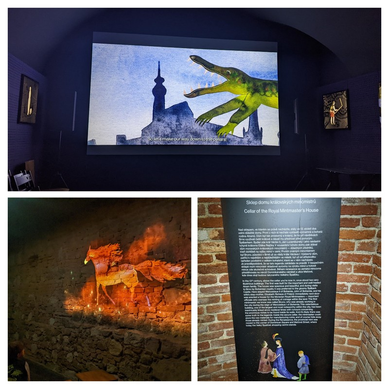
Železniční skanzen Lupěné-Hněvkov
Vlaky už u nás poslední dobou nejsou až tak v kurzu, ale tento výlet pochází ještě z Oliho šotoušského období :). Pokud někdy budete mít cestu na Jesenicko, určitě stojí toto místo za zastavení. Exponáty Železničního skanzenu Lupěné odkazují na historii železnice, která je s tímto místem spjata už více než sto padesát let. Hlavním magnetem je historická parní lokomotiva řady 317 z roku 1950. Dále jsou v expozici mechanické závory a různé typy návěstidel. Exponáty byly získány z rušených železničních stanic, parní lokomotiva z bývalého železničního depa. Jako bonus je zde vidět na železniční trať, takže můžete mávat okolo projíždějícím vlakům. Ze skanzenu vede po cyklostezce i krátká naučná stezka, ale tu jsme nešli – byl zrovna leden a veeelikánská zima :)
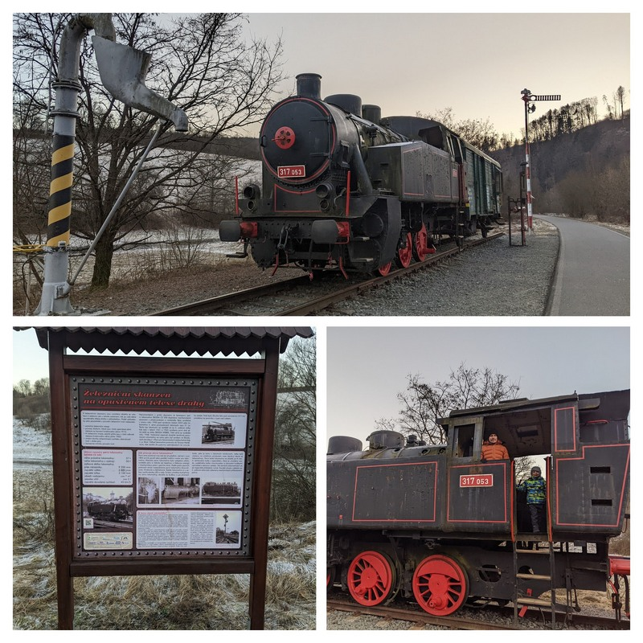
Pradědovo dětské muzeum, Bludov
V okolí Ramzové už to máme za ty roky, co v zimě jezdíme do Jeseníků, docela prozkoumané. Proto jsme se tentokrát na zpáteční cestě domů rozhodli navštívit Pradědovo dětské muzeum, které najdete v malé obci Bludov asi 5 km od Šumperka. V muzeu naleznete rozsáhlou dětskou herničku bohatě vybavenou hračkami pro děti všech věkových kategorií. Nechybí odrážedla, vláčkodráha i různé psychomotorické pomůcky. Nejvíc se mi ale líbily dřevěné dětské domečky, z nichž každý byl nějak tematicky zaměřen a v každém bylo možné najít různé další rekvizity pro tisíc a jednu hru. V muzeu se nenudí ani dospělí – zatímco si děti hrají, můžete si pročítat zajímavosti o Jesenicku nebo spřádat plány na další výlety. Součástí muzea je i venkovní hřiště, to jsme ale vzhledem k aktuální roční době nevyužili – v létě ale musí být také super 😊!
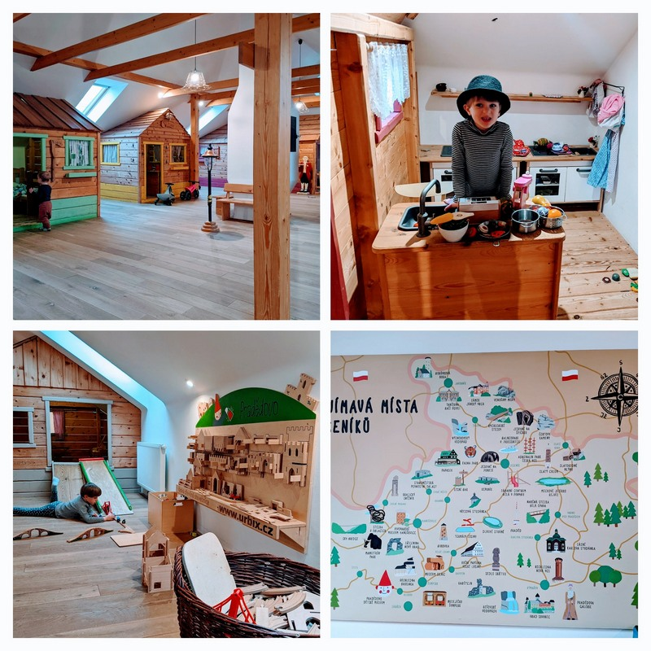
Rudice
Do Rudice jsem se svého času najezdila především na bujaré pracovní večírky, o těch to ale dnes nebude :-D Zdejší přírodní zajímavost – Rudické propadání – jsme si vybrali jako cíl jednoho z našich raně jarních výletů po krásách Moravského krasu. Auto jsme zaparkovali hned vedle větrného mlýna, který pochází z roku 1865 a dnes slouží jako muzeum. Prošli jsme si také přilehlý geopark a poté už zamířili k Rudickému propadání. Jedná se o jeskynní systém (druhý nejdelší v ČR) vytvořený Jedovnickým potokem, který se propadá v aktivním ponoru slepého údolí nedaleko Rudice a vyvěrá u Býčí skály v Josefovském údolí nedaleko Adamova. Cestu nám zpestřila početná skupina horolezců, která neohroženě slézala okolní skály 😊
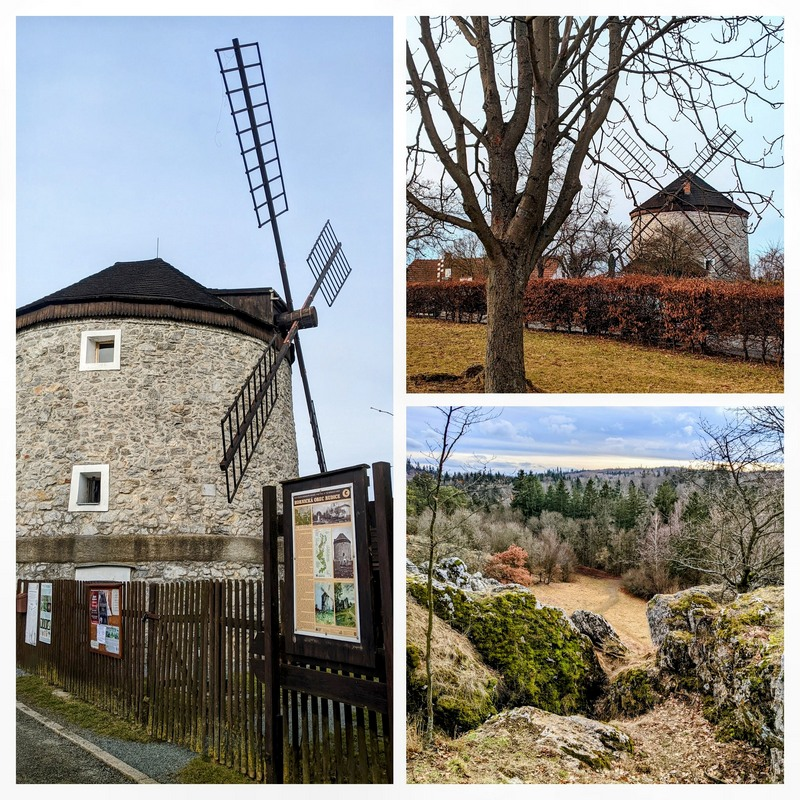
Archeopark pravěku, Všestary
Toto místo jsem navštívila v rámci zpestření pracovní cesty do Hradce Králové – ne že bych byla až takový fanoušek doby kamenné :-) Místní průvodce však o tomto období mluvil tak zaníceně, že jsem si na první pohled nezáživný exkurz do dávné historie docela užila. Nejprve jsme navštívili venkovní část expozice, kde najdete konstrukce pravěkých budov z doby kamenné, bronzové a železné. Atmosféru skvěle dokresluje okolo vesele pobíhající domácí zvěř :-) Poté jsme se přemístili do budovy, kde se dozvíte mnohé o běžném životě pravěkých lidí a můžete si prohlédnout i obrovský model pravěké krajiny.
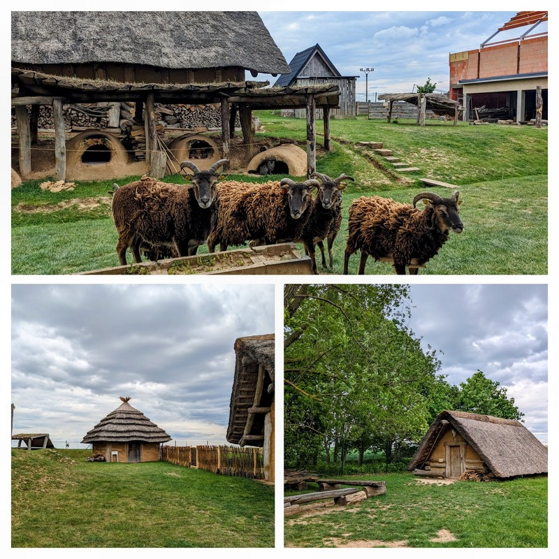
Výstava železničních modelů, zámek Zdounky
Co by to bylo za kulturní příspěvek bez nějaké té modelářské výstavy s železniční tematikou, že :-) Za tímto zážitkem jsme se vydali na zámek do Zdounek (a byť jsem ve Zdounkách byla mockrát, existence tamního zámku mi dosud byla úspěšně utajena). Předchozí jaro se výletu Olí zúčastnil jen s dědou, protože já jsem si zrovna léčila zánět v noze a nemohla jsem chodit, ale tentokrát už jsem si výstavu ujít nenechala. Krom rozličných železničních modelů zde byla k vidění i výstava autoveteránů, vystoupení uniformovaných ostrostřelců a k Oliho velké radosti také spousta hraček a vagonků na prodej (ale musím říct, že za velmi příznivé ceny). Výstava se koná každé jaro a můžete ji spojit i s výletem vláčkem – to budou vaši malí šotoušové v sedmém nebi O:-)
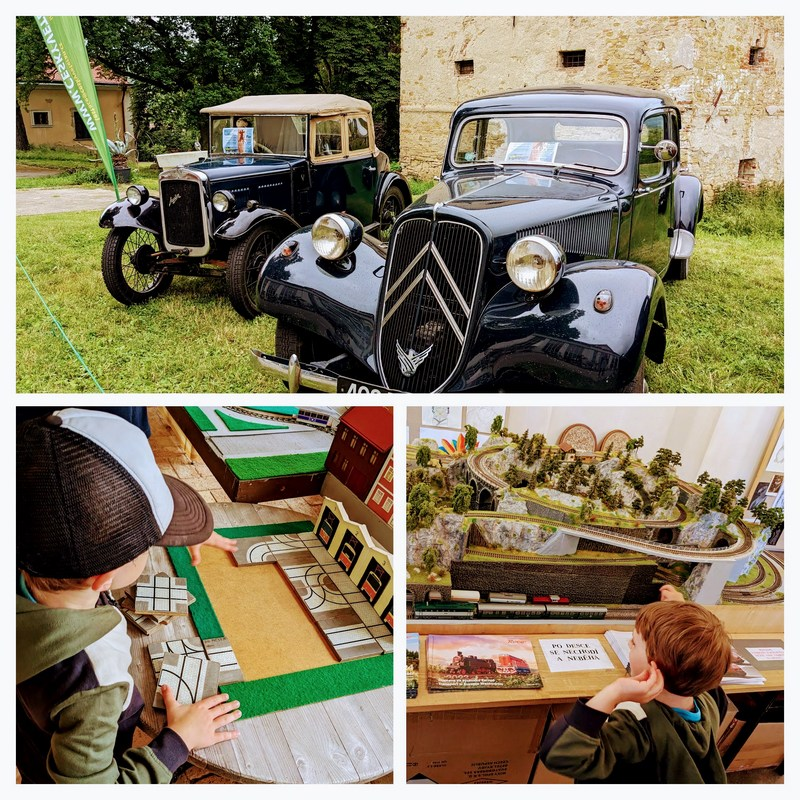
Jindřichova skála
A výlet zase z úplně jiného soudku i lokace, byla tato předprázdninová výprava s O. sestřenicemi a bratrancem na Jindřichovu skálu v Brdech. Jedná se o romantický skalní masiv s krásnou vyhlídkou v nadmořské výšce 588 metrů nad mořem, odkud dohlédnete třeba na zříceninu hradu Valdek. Cesta lesem k vyhlídce je malebná neméně, vede k ní totiž „kamenné moře“, které vzniklo zvětráváním horniny a jejím řícením. Zaparkovat se dá až těsně před závorou vojenského prostoru, odkud vede asi 1km dlouhá cesta přímo k vyhlídce, takže to v pohodě zvládnou i menší děti.
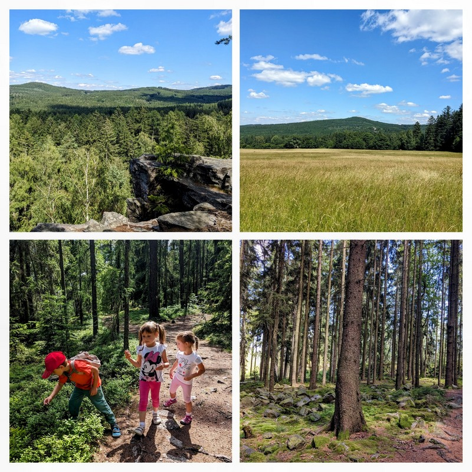
Muzeum Smyslů, Praha
S těmito typy muzejí se poslední dobou tak trochu roztrhnul pytel. Na nás čekal voucher do Muzea Smyslů už od Vánoc 2019, ale vzhledem ke covidu a dalším okolnostem jsme se k jeho uplatnění dostali se značným zpožděním. Naštěstí nebyl časově omezen :-D A navíc myslím, že Oli jako předškolák ocenil potenciál různých optických klamů přece jen už víc. Muzeum je ale poměrně malinké, do hodiny jsme ho měli projité určitě, takže vzhledem k ceně vstupenek je to zážitek, který si asi můžete nechat v pohodě ujít nebo ho přenechat zahraničním turistům, kterých tam bylo požehnaně.
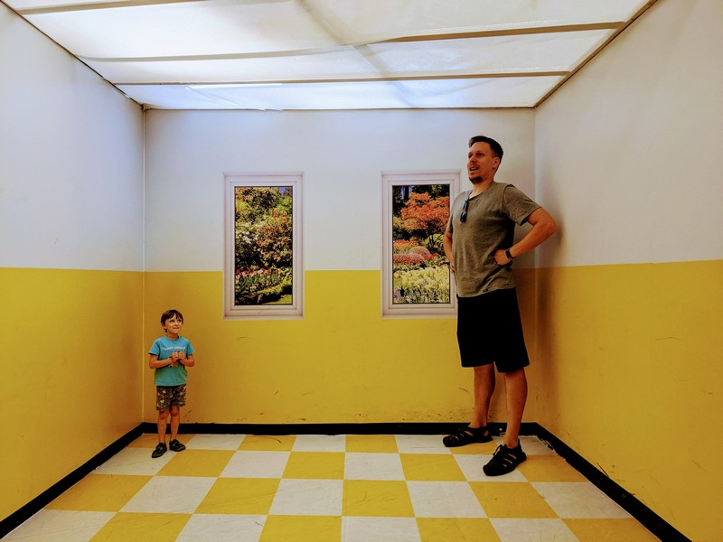
Expozice “Poklady staré půdy”, Muzeum Kroměřížska
Spontánní nápad vyrazit s O. poprvé do kroměřížského muzea se setkal s velkým ohlasem – expozice Poklady staré půdy, která se nachází v nově zrekonstruovaných podkrovních prostorách muzea, je totiž vizuálně moc hezky a zábavně udělaná. Tvoří ji jak cenné exponáty, pro které muzeum aktuálně nemá jiné prostory ani využití, tak všelijaké staré „harampádí“, které byste dost možná ještě objevili u svých prarodičů na půdě nebo ve sklepě. To všechno dohromady spolu s tajemným příšeřím půdních prostor tvoří báječnou směsici, v níž se z dětí stávají malí detektivové, kteří za pomoci plánku a indicií mají za úkol najít několik konkrétních předmětů. A při tom můžou jen tak mimoděk prozkoumávat různá zákoutí a možná objevit i tajnou chodbu ;-) Pokud jste expozici ještě nenavštívili, moc doporučuji – je to jedno z těch míst, kde se zabaví opravdu celá rodina.
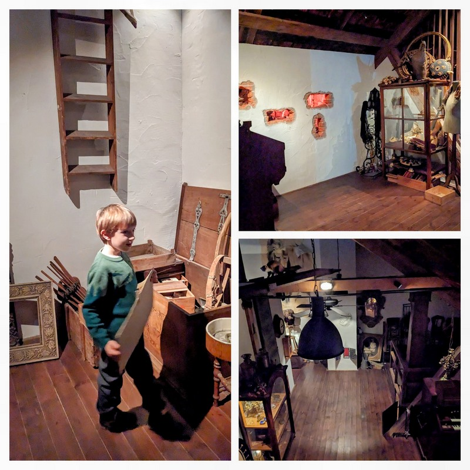
Výstava Světelný vodní svět, Příbram
S těmito světelnými výstavami se poslední dobou také celkem roztrhnul pytel a to už vůbec nemluvím o tom, do jakých závratných výšin se většinou šplhají ceny vstupenek na tyto akce. Proto nezoufejte, pokud vás to dosud míjelo – určitě se nejedná o zážitek, který byste si nemohli nechat ujít. Pořídíte tu pár hezkých fotografií (pokud se zrovna proboxujete davy dalších návštěvníku 😊), ale to je asi tak všechno. Já se o Vánocích světýlkama raději kochám v teple domova.
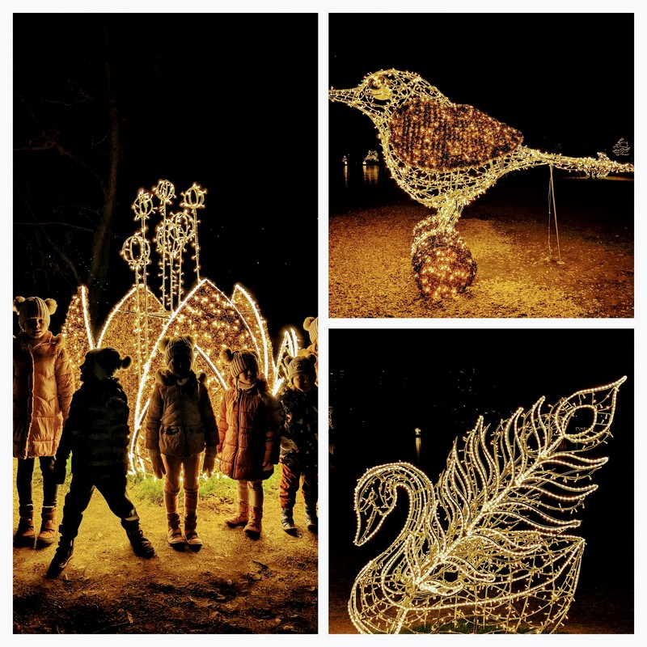
Slámový betlém, Čenkov
No a na závěr ještě jeden lehce vymrzlý vánoční zážitek z malé středočeské vesničky Čenkov, kam jsme se na Silvestra vypravili navštívit největší slaměný betlém v životní velikosti v ČR :-) Najdete ho na návsi u kapličky a je zapsán v České knize rekordů.
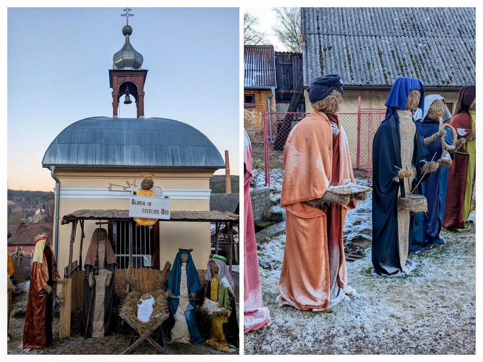
A to by bylo z našich nejzajímavějších výletů za loňský rok asi vše. Tak na viděnou u dalších (ne)kulturních zážitků – a snad dříve než zase za rok :-)!